22 La evolución de los primates
465
CONCEPTOS CLAVE
22.1 Los humanos se clasifi can en el orden de los Primates, junto con lémures, tarseros, monos y simios. Esta clasifi cación se basa en estrechos lazos evolutivos. 22.2 El estudio de los primates vivos ofrece pistas para ayudar a los científi cos a reconstruir las adaptaciones y estilos de vida de los primeros primates, algunos de los cuales fueron ancestros de los humanos. 22.3 La evidencia fósil indica que los primeros ancestros humanos surgieron en África y compartieron muchas características con sus antepasados simiescos. El cerebro humano no comenzó a agrandarse hasta su tamaño y complejidad actual sino mucho después de que los ancestros de los humanos evolucionaron a la locomoción bípeda. 22.4 La cultura humana comenzó cuando los ancestros humanos comenzaron a fabricar herramientas de piedra.
D
oce años después de que Darwin escribiera El origen de las especies mediante selección natural , publicó otro libro controversial, La descendencia del hombre , que abordaba la evolución humana. En este libro, Darwin plantea la hipótesis de que humanos y simios comparten un linaje común. Durante casi un siglo después de los estudios de Darwin, la evidencia fósil de la ascendencia humana permaneció bastante incompleta. Sin embargo, la investigación durante las últimas décadas, sobre todo en África, produjo un conjunto de fósiles que se acumularon rápidamente y dieron una respuesta cada vez más clara a la pregunta: ¿de dónde proviene el hombre? (Vea la fotografía). La evidencia fósil de la paleoantropología , el estudio de la evolución humana, permite a los científi cos inferir no sólo la estructura, sino también los hábitos de los humanos primitivos y otros primates. Dientes y huesos son la principal evidencia fósil que estudian los paleoantropólogos. Al estudiar los dientes se puede obtener mucha información, la cual ha cambiado en forma dramática durante el curso de la evolución primate y
Estudio de la evolución humana. Los doctores Mary y Louis Leakey, ya fallecidos, estudiaron dientes fósiles de Australopithecus boisei , un homínino (humano) primitivo que vivió en África. Esta fotografía se tomó en Olduvai Gorge, en Tanzania. La familia Leakey contribuyó en gran medida a lo que ahora se sabe acerca de la evolución humana. Su hijo Richard, su nuera Meave y su nieta Louise siguieron los pasos de Mary y Louis.
Des Bartlett/Photo Researchers, Inc.
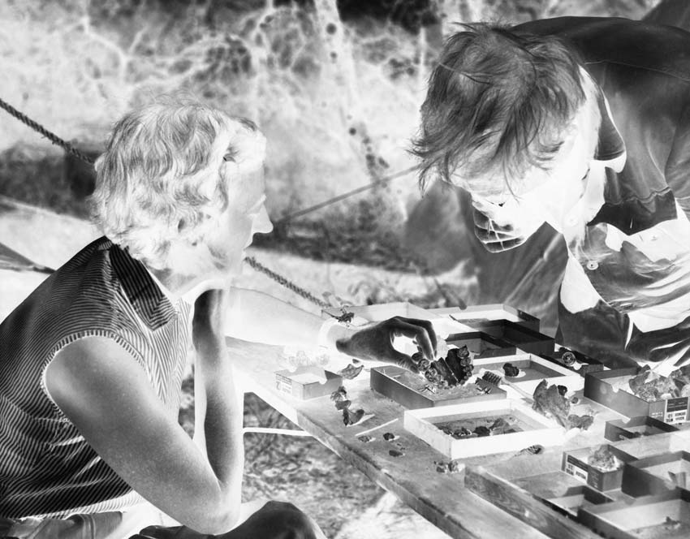
466 Capítulo 22
humana. Puesto que el esmalte dental está más mineralizado (endurecido) que los huesos, los dientes tienen más probabilidad de fosilizarse. Los dientes de cada especie primate, viva o extinta, son sufi cientemente característicos para identifi car la especie, edad aproximada, dieta e incluso el sexo del individuo. Con base en la evidencia fósil, los paleontólogos plantean la hipótesis de que los primeros primates descendieron de pequeños mamíferos placentarios parecidos a musarañas que vivían en árboles y comían insectos. (Los mamíferos placentarios son el grupo de mamíferos más grande y más exitoso. Tienen una placenta , un órgano que intercambia materiales entre la madre y el embrión-feto que se desarrolla en el útero). Muchos rasgos de las 233 especies de primates vivientes se relacionan con su pasado arborícola (vida en los árboles). Este capítulo se enfoca en los humanos y sus ancestros, quienes difi eren de la mayoría de los otros primates en que no permanecieron en los árboles sino que se adaptaron a una forma de vida terrestre.
22.1 ADAPTACIONES PRIMATES
■ ■ OBJETIVO DE APRENDIZAJE
1 Describir las adaptaciones estructurales que tuvieron los primates para vivir en las copas de los árboles.
Los humanos y otros primates (incluidos lémures, tarseros, monos y simios) son mamíferos que comparten caracteres como manos y pies fl exibles con cinco dedos, una fuerte organización social y ojos al frente de la cara, lo que les permite tener percepción profunda. Los mamíferos (clase Mammalia) evolucionaron de reptiles parecidos a mamíferos conocidos como therápsidos hace más de 200 millones de años, durante la era Mesozoica (vea la fi gura 32-24). Dichos mamíferos tempranos permanecieron como un componente menor de la vida sobre la Tierra durante casi 150 millones de años y luego se diversifi caron rápidamente durante la era Cenozoica (desde hace 66 millones de años hasta el presente). La evidencia fósil indica que los primeros primates con rasgos característicos de primates modernos aparecieron hacia la época Eoceno temprana hace alrededor de 56 millones de años. Estos primates primitivos tenían dedos con uñas y sus ojos estaban dirigidos un poco hacia adelante sobre la cabeza. Muchas adaptaciones novedosas que evolucionaron en los primeros primates les permitieron vivir en los árboles. Una de las características más signifi cativas de los primates es que cada extremidad tiene cinco dedos muy fl exibles: cuatro laterales (dedos) más un primer dedo parcial o totalmente oponible (el pulgar y, en muchos primates, el dedo gordo del pie; FIGURA
22-1 ). Un pulgar oponible coloca los dedos opuestos al pulgar, lo que permite a los primates asir con precisión objetos como ramas de árbol. Las uñas (en lugar de garras) brindan una cubierta protectora para las puntas de los dedos y las almohadillas carnosas en los extremos de los dedos son sensibles al tacto. Otra característica arborícola son las largas extremidades delgadas que giran libremente en la cadera y los hombros, lo que da a los primates plena movilidad para ascender y buscar alimento en la copa de los árboles. Tener ojos ubicados al frente de la cabeza permite a los primates integrar información visual de ambos ojos de manera
simultánea; tienen visión estereoscópica (tridimensional), que es importante para juzgar distancias y en la percepción profunda. La visión estereoscópica es vital en un ambiente arbóreo, sobre todo para las especies que saltan de rama en rama, porque un error en la percepción profunda puede provocar una caída mortal. Además de tener visión aguda, los primates escuchan con agudeza. Los primates comparten muchas otras características, incluido un cerebro relativamente grande. Los biólogos sugieren que el aumento en la percepción sensorial asociada con la visión aguda y la mayor agilidad de los primates favoreció la evolución de cerebros más grandes. Por lo general, los primates son animales muy sociables e inteligentes que llegan a la madurez sexual en una etapa de la vida relativamente tardía. Suelen tener vidas muy largas. Las hembras por lo general tienen una cría a la vez; el bebé es indefenso y requiere un largo período de crianza y protección.
Repaso
■ ¿Cómo se adaptaron las manos y los pies de los primates a una existencia arborícola?
■ ¿Por qué la ubicación de los ojos de los primates enfrente de la cabeza es una importante adaptación para una vida arborícola?
Los primates tienen cinco dedos para asir al fi nal de cada extremidad, y el pulgar o primer dedo del pie con frecuencia es parcial o totalmente oponible.
Mano Pie Mano Pie
Mano Pie Mano Pie
Lémur ( Eulemur mongoz ) (b) Tarsero ( Tarsius spectrum )
Mono araña lanudo ( Brachyteles arachnoides ) (d) Gorila ( Gorilla gorilla )
Adaptado de Schultz, A. H. The Life of Primates. Weidenfeld & Nicholson, London, 1969.
FIGURA 22-1 Manos y pies derechos de primates seleccionados Las fi guras no están dibujadas a escala.
PUNTO CLAVE
La evolución de los primates 467
como los gálagos, que viven en el África subsahariana. Lémures, lorises y gálagos retienen muchas características de los mamíferos primitivos, como rostros puntiagudos alargados. Los tarseros se encuentran en los bosques húmedos de Indonesia y Filipinas ( FIGURA 22-3 ). Son pequeños primates (aproximadamente del tamaño de una rata pequeña) y son saltadores muy hábiles. Estos primates nocturnos parecen antropoides en muchas formas, incluidos su hocico corto y ojos que apuntan hacia adelante.
El suborden Anthropoidea incluye monos, simios y humanos
Los primates antropoides surgieron durante la época Eoceno medio, al menos hace 45 millones de años. Se han identifi cado muchos antropoides fósiles diferentes, de Asia y África del norte, y existe un creciente consenso acerca de las relaciones de estos grupos fósiles entre sí y con los antropoides vivos. La evidencia indica que los antropoides se originaron en África o Asia. Los fósiles antropoides más antiguos conocidos, como
22.2 CLASIFICACIÓN DE LOS PRIMATES
OBJETIVOS DE APRENDIZAJE
2 Mencionar los tres subórdenes de los primates y dar ejemplos representativos de cada uno. 3 Distinguir entre antropoides, hominoides y homíninos.
Ahora que se examinaron las características generales de los primates, observe cómo se clasifi can. Muchos biólogos actualmente dividen el orden Primates en tres grupos o subórdenes ( FIGURA 22-2 ). El suborden Prosimii incluye lémures, gálagos y lorises; el suborden Tarsiiformes incluye tarseros; y el suborden Anthropoidea incluye a los antropoides (monos, simios y humanos). Todos los lémures están restringidos a la isla de Madagascar, frente a la costa de África. Debido a la extensiva destrucción de hábitat y a la caza, están muy amenazados. Los lorises, que viven en áreas tropicales del sureste de Asia y África, parecen lémures en muchos aspectos, así
Muchos tipos de datos apoyan la hipótesis de que los chimpancés son los parientes vivos más cercanos de los humanos.
Ancestro antropoide común
Lémures Monos del Nuevo Mundo Monos del Viejo Mundo Gibones Orangutanes Gorilas Chimpancés Humanos
Hominoides
Simios inferiores Grandes simios
Tarseros
Ancestro primate común
Suborden Anthropoidea (Antropoides) Suborden Tarsiiformes Suborden Prosimii
Ancestro hominoide común
FIGURA 22-2 Animada Evolución primate
Este diagrama de ramas, llamado cladograma, muestra las relaciones evolutivas entre los primates vivos, con base en evidencia científi ca actual. Los nodos ( círculos ) representan puntos de ramifi cación donde una especie se divide en dos o más linajes. La divergencia de los orangutanes a partir de la línea simio-homínino ocurrió hace unos 12 a 16 millo-
nes de años. Los gorilas se separaron de la línea chimpancé-homínino hace unos 8 millones de años y el linaje homínino (humano) divergió del de los chimpancés hace aproximadamente 6 millones de años. ( Las fi guras no están dibujadas a escala ) .
PUNTO CLAVE
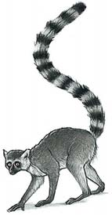
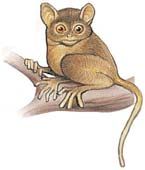
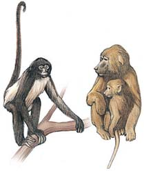
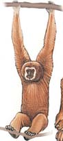
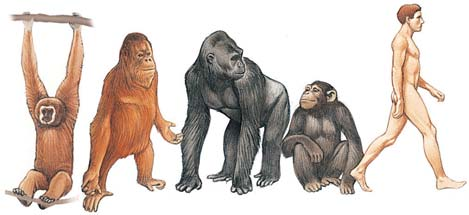
468 Capítulo 22
Por lo general, los monos son habitantes diurnos de los árboles (activos durante el día). Tienden a comer fruta y hojas, con nueces, semillas, capullos, insectos, arañas, huevos de aves e incluso pequeños vertebrados que tienen una parte más pequeña en sus dietas. Los dos grupos principales de monos, monos del Nuevo Mundo y monos del Viejo Mundo, se llaman así por los hemisferios donde se diversifi caron. Los monos de América del Sur y Central se llaman monos del Nuevo Mundo, mientras que los monos de África, Asia y Europa se llaman monos del Viejo Mundo. Ambos grupos evolucionaron por separado durante decenas de millones de años. Una de las preguntas más importantes e interesantes en la evolución de los antropoides es cómo llegaron los monos a América del Sur. África y América del Sur ya se habían separado. (La deriva continental se presentó en la fi gura 18-11). Los ancestros de los monos del Nuevo Mundo pudieron haber viajado de África a América del Sur sobre masas de vegetación fl otante. El océano Atlántico sur tendría aproximadamente la mitad del ancho que tiene en la actualidad y algunas islas pudieron servir como “escalones”. Una vez establecidos en el Nuevo Mundo, estos monos se diversifi caron rápidamente. Los monos del Nuevo Mundo están restringidos a América del Sur y Central, e incluyen titíes, capuchinos, monos aulladores, monos ardilla y monos araña. Son arborícolas y algunos tienen largas extremidades delgadas que les permiten moverse con facilidad en los árboles ( FIGURA
22-4a ). Algunos tienen colas prensiles capaces de enrollarse alrededor de las ramas y funcionar como una quinta extremidad. Algunos monos del Nuevo Mundo tienen pulgares más cortos, y en ciertos casos los pulgares están totalmente ausentes. Su anatomía facial difi ere de la de los monos del Viejo Mundo en que tienen narices aplanadas con las ventanas de la nariz abiertas hacia los lados. Viven en grupos y se involucran en complejos comportamientos sociales.
el Eosimias de 42 millones de años de antigüedad, se encontraron en China y Myanmar. Dados los detalles acerca de su dentición y los pocos huesos que se han descubierto, los científi cos infi eren que el Eosimias y otros antropoides ancestrales eran pequeños primates arborícolas insectívoros que estaban activos durante el día. Una vez que evolucionaron, los antropoides se dispersaron rápidamente a través de Europa, Asia y África, y llegaron a América del Sur mucho más tarde. (Los paleoantropólogos datan al primate sudamericano más antiguo conocido, Branisella , de Bolivia, en 26 millones de años). Una diferencia signifi cativa entre los antropoides y otros primates es el tamaño de sus cerebros. En particular el encéfalo está más desarrollado en monos, simios y humanos, en los que funciona como un centro extremadamente complejo para el aprendizaje, el movimiento voluntario y la interpretación de sensaciones.
- Mono del Nuevo Mundo. El mono cara blanca ( Cebus capucinus ) tiene una cola prensil y una nariz aplanada con las ventanas de la nariz dirigidas hacia los lados.
C. C. Lockwood/DRK Photo
- Mono del Viejo Mundo. El papión Anubis ( Papio anubis ) es nativo de África. Observe que las ventanas de la nariz están dirigidas hacia abajo.
Tierbild Okapia/Photo Researchers, Inc.
FIGURA 22-4 Monos del Nuevo Mundo y del Viejo Mundo
Frans Lanting/Minden Pictures
FIGURA 22-3 Un tarsero Los grandes ojos del tarsero ( Tarsius bancanus ) le ayudan a encontrar insectos, lagartijas y otras presas cuando caza durante la noche. Cuando un tarsero ve un insecto, salta sobre él y lo agarra con las manos. Los tarseros viven en los bosques húmedos de Indonesia y Filipinas.
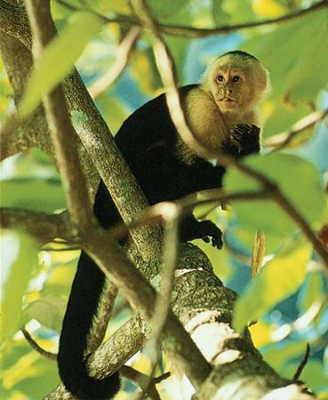
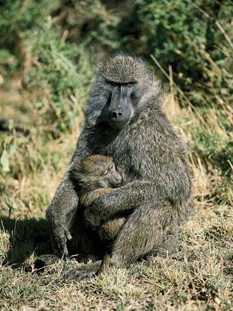
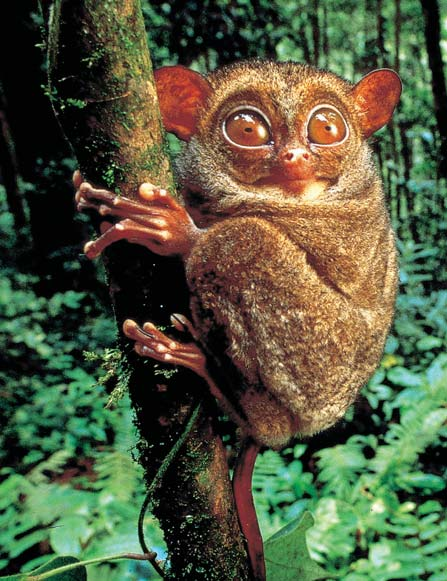
La evolución de los primates 469
rrir incluso antes. Durante la época del Mioceno vivían 100 especies de simios en África, Asia y Europa. Los paleoantropólogos descubrieron los fósiles más antiguos con características hominoideas en África oriental, principalmente en Kenia. El Proconsul , por ejemplo, apareció temprano en la época Mioceno, hace aproximadamente 20 millones de años ( FIGURA 22-5b ). Tenía un cerebro más grande que el de los monos, dientes como los simios, su dieta de frutas y un cuerpo de mono. Las otras 30 especies de hominoides tempranos vivieron durante la época Mioceno, pero la mayoría de ellas se extinguieron y no fueron el ancestro común de los simios y humanos modernos. Los fósiles de simios del Mioceno, del tamaño de un chimpancé y que habitaban en los bosques, llamados driopitecinos , vivieron hace aproximadamente 15 millones de años, son de especial interés porque este linaje hominoide pudo dar origen a los simios modernos, así como a los humanos ( FIGURA 22-5c ). Los driopitecinos, como Dryopithecus , Kenyapithecus y Morotopithecus , estaban ampliamente distribuidos a lo largo de Europa, África y Asia. Conforme el clima se enfrió de manera gradual y se volvió más seco, su rango se volvió más limitado. Estos simios tenían cuerpos muy modifi cados para balancearse en las ramas de los árboles, aunque también hay evidencia de que algunos de ellos quizá cambiaron las copas de los árboles por el suelo conforme el bosque denso cambió poco a poco a bosque abierto. Por el descubrimiento de éstos y otros hominoides del Mioceno han surgido muchas preguntas acerca de las relaciones entre los diversos simios tempranos. Conforme se evalúen los hallazgos de los futuros fósiles, se podrá conducir el reordenamiento de los ancestros en el árbol familiar hominoide. En la actualidad existen cinco géneros de hominoides: gibones ( Hylobates ), orangutanes ( Pongo ), gorilas ( Gorilla ), chimpancés ( Pan ) y humanos ( Homo ). Los gibones se conocen de manera informal como simios inferiores; orangutanes, gorilas y chimpancés se conocen como grandes simios. La evidencia molecular indica una relación cercana entre los humanos y los grandes simios, en particular con los chimpancés.
Los monos del Viejo Mundo están distribuidos en zonas tropicales de África y Asia. Además de los babuinos y macacos, el grupo del Viejo Mundo incluye cercopitecos, mangabeys, langures y colobos. La mayoría de ellos son arborícolas, aunque algunos, como los babuinos y macacos, pasan gran parte de su tiempo en el suelo ( FIGURA 22-4b ). Los que habitan en el suelo, que son cuadrúpedos (de cuatro patas; caminan con las cuatro), surgieron a partir de monos arborícolas. Ninguno de los monos del Viejo Mundo tiene cola prensil y algunos tienen colas extremadamente cortas. Tienen un pulgar totalmente oponible y, a diferencia de los monos del Nuevo Mundo, las ventanas de la nariz están más juntas y dirigidas hacia abajo. Son animales intensamente sociales.
Los simios son los parientes vivos más cercanos de los humanos
Los monos del Viejo Mundo compartieron un ancestro común con los hominoides , un grupo compuesto de simios y homíninos (humanos y sus ancestros; también llamados homínidos ). Un antropoide bastante primitivo, descubierto en Egipto, recibió el nombre de Aegyptopithecus ( FIGURA 22-5a ). Un mono arborícola, del tamaño de un gato, que habitaba en los bosques y tenía algunas características de simio, el Aegyptopithecus vivió durante la época Oligoceno, hace aproximadamente 34 millones de años. La evidencia fósil indica que simios y monos del Viejo Mundo divergieron entre 25 y 23 millones de años, aunque en 2004 un análisis genético de simios y monos vivos sugirió que esta divergencia pudo ocu-
Fósiles de Aegyptopithecus , un antropoide bastante primitivo, se descubrieron en Egipto.
Reconstrucción esquelética del Proconsul . (Las partes reconstruidas son blancas). Este antropoide tenía las extremidades y proporciones corporales de un mono, pero carecía de cola,
Dryopithecus , un simio más avanzado, pudo ser un ancestro de los hominoides modernos.
FIGURA 22-5 Evolución de los simios (Las fi guras no están dibujadas a escala).
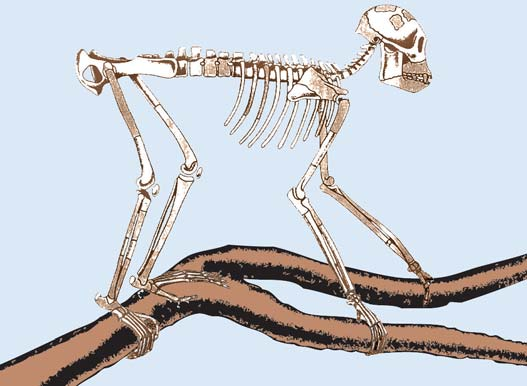
470 Capítulo 22
Repaso
■ ¿Cuáles son los tres subórdenes de los primates?
■ ¿Cómo puede distinguir entre antropoides y hominoides?
Los gibones son acróbatas naturales que pueden braquiar , o balancear los brazos, con su peso sostenido por un brazo a la vez ( FIGURA 22-6a ). Los orangutanes también son arborícolas, pero los chimpancés y en especial los gorilas se adaptaron a la vida en el suelo ( FIGURA 22-6b-d ). Gorilas y chimpancés conservan los brazos largos típicos de los primates que braquiaban, pero los usan para auxiliarse en el andar cuadrúpedo, en ocasiones conocido como locomoción en nudillos debido a la forma como pliegan (fl exionan) sus dedos cuando se mueven. Como los humanos, los simios carecen de colas, una característica que los hace fácilmente distinguibles de los monos. Por lo general son mucho más grandes que estos últimos, aunque los gibones son una excepción notable.
Datos moleculares proporcionan pistas acerca de la evolución de los primates antropoides
La evidencia de la cercana relación de orangutanes, gorilas, chimpancés y humanos es abundante en el nivel molecular. La secuencia de aminoácidos de la hemoglobina del chimpancé es idéntica a la del humano; las moléculas de hemoglobina del gorila y el mono rhesus difi eren de la del humano por 2 y 15 aminoácidos, respectivamente. El análisis de la secuencia del ADN indica que entre los simios los chimpancés tienen la probabilidad de ser los parientes vivos más cercanos de los humanos. (La fi gura 18-18 muestra la divergencia porcentual en una secuencia no codifi cadora del gen b -globina entre varios primates, incluidos simios y humanos). Los investigadores planean secuenciar los genomas de muchos primates, incluidos todos los simios. El genoma del chimpancé se secuenció en el 2005 y el del macaco (un mono del Viejo Mundo) en 2007. Se considera que los macacos se dividieron del linaje antropoide hace aproximadamente 25 millones de años, así que comparar su genoma con los de chimpancés y humanos ayudó a los investigadores a identifi car los cambios genéticos que evolucionaron sólo en el linaje antropoide. La evidencia molecular sugiere que los orangutanes pudieron divergir de las líneas gorila, chimpancé y homínina hace aproximadamente 14 millones de años. Los gorilas pudieron divergir de las líneas chimpancé y homínina hace unos 8 millones de años, mientras que las líneas chimpancé y homínina probablemente se separaron hace aproximadamente 6 a 7 millones de años.
Una madre gibón mano blanca ( Hylobates lar ) alimenta a su bebé. Los gibones son extremadamente acrobáticos y con frecuencia se mueven por los árboles mediante braquiación.
Una madre orangután ( Pongo pygmaeus ) y su bebé. La anatomía del orangután está adaptada para vivir en los árboles.
Un joven gorila terrestre ( Gorilla gorilla ) en posición de locomoción en nudillos. Los gorilas pasan la mayor parte del día comiendo plantas.
Una madre chimpancé bonobo ( Pan paniscus ) con su bebé. Los bonobos son endémicos de un solo país, la República Democrática del Congo.
Joe McDonald/Visuals Unlimited, Inc.
BIOS/Peter Arnold, Inc.
Nancy Adams/Tom Stack & Associates
© Ronald van der Beek/Shutterstock.
FIGURA 22-6 Simios
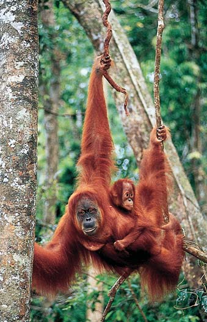
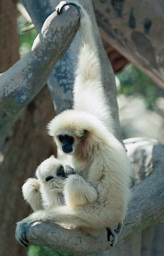
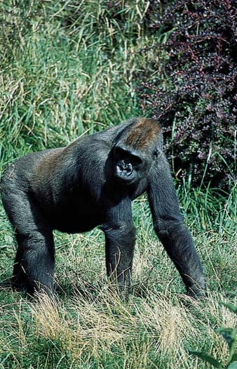
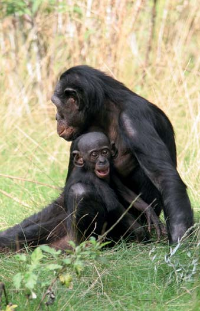
La evolución de los primates 471
lución homínina están infl uidas por las diferentes perspectivas de los varios trabajadores que los estudian. La falta de consenso científi co en cuanto a ciertos aspectos de la evolución homínina es, por tanto, una parte esperada del proceso científi co. Los cambios evolutivos desde los primeros homíninos hasta los humanos modernos son evidentes en algunas de las características del esqueleto y el cráneo. En comparación con el esqueleto de los simios, el esqueleto de los humanos muestra claras diferencias que refl ejan su capacidad para pararse erguidos y caminar en dos pies ( FIGURA 22-7 ). Estas diferencias también refl ejan el cambio de hábitat para los primeros homíninos, desde una existencia arborícola en el bosque, a una vida transcurrida al menos en parte sobre el suelo. La curvatura de la columna vertebral humana proporciona mejor equilibrio y distribución del peso para la locomoción bípeda. La pelvis humana es más corta y más ancha que la de los simios, lo que permite mejor unión de los músculos empleados para el andar erguido. (La forma de la pelvis humana también permite el nacimiento de crías con cerebros grandes). En los simios, el foramen magnum , el orifi cio en la base del cráneo para la médula espinal, se ubica en la parte trasera del cráneo. En contraste, el foramen magnum humano está centrado en la base del cráneo, lo que coloca la cabeza para el andar erecto. Un aumento en la longitud de las piernas con respecto a los brazos y la alineación del
22.3 EVOLUCIÓN HOMÍNINA
OBJETIVOS DE APRENDIZAJE
4 Describir las diferencias esqueléticas y craneales entre simios y homíninos. 5 Describir brevemente a los siguientes homíninos tempranos: Orrorin , Ardipithecus y Australopithecus anamensis , A. afarensis y A. africanus . 6 Distinguir entre los siguientes miembros del género Homo : H. habilis , H. ergaster , H. erectus , H. antecessor , H. heidelbergensis , H. neanderthalensis y H. sapiens . 7 Discutir el origen de los humanos modernos.
Los científi cos tienen un creciente almacén de cientos de fósiles homíninos que ofrece datos útiles acerca de las tendencias generales y el diseño corporal, apariencia y comportamiento de los humanos ancestrales. Por ejemplo, antes de que sus cerebros se agrandaran, los primeros homíninos claramente adoptaron una postura bípeda (dos pies). A pesar de la riqueza de la evidencia fósil, los científi cos continúan debatiendo acaloradamente interpretaciones de características homíninas, su clasifi cación y evolución, y nuevos descubrimientos plantean nuevas preguntas. Como en otros campos científi cos, las ideas acerca de la evo-
Esqueleto de gorila
Foramen magnum en la parte central trasera del cráneo
Pelvis estrecha y alta (vista frontal)
Esqueleto de humano
Primer dedo del pie no oponible y todos los dedos alineados Primer dedo del pie no alineado con los otros
Pelvis más ancha y más corta (vista frontal)
Foramen magnum en el centro de la base del cráneo
Columna con curva simple Curvatura compleja de la columna vertebral humana
FIGURA 22-7 Esqueletos de gorila y humano Cuando se comparan los esqueletos de gorila y humano, las adaptaciones esqueléticas para el bipedalismo en los humanos se vuelve aparente.
472 Capítulo 22
humano no es un solo tronco, sino que tiene varias ramas ( FIGURA 22-9 ). Acaso sea más útil pensar en los fósiles homíninos conocidos como un muestreo de la evolución humana en lugar de una secuencia continua. El Homo sapiens es la única especie de homínino que existe hoy en día, pero en cualquier tiempo dado durante la mayor parte de los últimos 4 millones de años coexistieron al menos dos especies de homínino. Además, no cometa el error de pensar que sus ancestros de cerebro más pequeño eran inferiores. Los homíninos ancestrales fueron evolutivamente exitosos en cuanto a que estaban bien adaptados a su ambiente y sobrevivieron durante millones de años.
Los primeros homíninos quizá vivieron hace 6 a 7 millones de años
La evolución homínina comenzó en África. Aunque la mayoría de los fósiles homíninos se han descubierto en Etiopía y Kenia, en 2002 el paleontólogo francés Michel Brunet y un equipo internacional realizaron un sorprendente descubrimiento en el lecho de un lago seco en Chad, que está en África central. El fósil, que se dató de manera confi able en 6 a 7 millones de años de antigüedad, puede ser el homínino más antiguo conocido. Visto desde la parte posterior, el cráneo del Sahelanthropus , con su pequeña bóveda craneal, parece el de un chimpancé. Sin embargo, visto desde el frente, el rostro y los dientes tienen muchas características de los ancestros humanos con cerebro más grande. La mayoría de los paleoantropólogos colocan al Sahelanthropus cerca de la base del árbol familiar humano; esto es, cerca de cuando los análisis genéticos sugieren la existencia del último ancestro común de homíninos y chimpancés. El descubrimiento del Sahelanthropus es importante por derecho propio, pero también es signifi cativo porque muestra que los primeros homíninos presentaban más variación y vivieron en áreas más grandes de África de las que originalmente se creía. El Orrorin , descubierto en 2000 en Kenia, también puede representar uno de los homíninos conocidos más antiguos. Los sedimentos donde se encontraron los fósiles de Orrorin se dataron fi ablemente en 6 millones de años de edad. En 2008, los investigadores que estudiaban los huesos fósiles de la pierna del Orrorin concluyeron que caminaba erguido y era bípedo. Como ocurre con muchos aspectos de la evolución humana, los científi cos tienen diferentes interpretaciones del Sahelanthropus y el Orrorin . Por ejemplo, algunos paleoantropólogos plantean la hipótesis de que el primero era un antecesor de los simios modernos, específi camente del gorila, y no de los primeros humanos. Otros investigadores consideran que las características similares de los fósiles de Sahelanthropus , Orrorin y Ardipithecus (que se estudia en la siguiente sección) signifi can que todos son miembros del mismo género, Ardipithecus . Este punto sigue siendo controvertido, principalmente porque en la actualidad no hay huesos esqueléticos (piernas, pelvis y huesos del pie) para indicar si el Sahelanthropus caminaba erguido, una característica clave de los homíninos. (Una reconstrucción del cráneo de 2005 tiene características que sugieren con fi rmeza que el Sahelanthropus era bípedo). Los futuros descubrimientos de fósiles y análisis adicionales de los fósiles existentes ayudarán a aclarar las relaciones evolutivas entre Sahelanthropus , Orrorin y Ardipithecus .
Ardipithecus , Australopithecus y Paranthropus son australopitecinos, o “simios hombres del sur”
Después del Sahelanthropus y el Orrorin , el siguiente homínino más antiguo pertenece al género Ardipithecus , que vivió en el este de África hace
primer dedo del pie con el resto de los dedos adaptó aún más a los primeros homíninos para el bipedalismo. Otra gran tendencia en la evolución homínina fue un aumento en el tamaño del cerebro en relación con el tamaño corporal ( FIGURA 22-8 ). El cráneo del simio tiene prominentes arcos superciliares sobre las cuencas oculares, mientras que los cráneos de los humanos modernos carecen de estos arcos. Los rostros humanos son más planos que los de los simios y las mandíbulas son diferentes. El arreglo de los dientes en la mandíbula de los simios es un poco rectangular, en comparación con un arreglo redondeado, o en forma de U, en los humanos. Los simios tienen dientes frontales más grandes (caninos e incisivos) que los humanos y sus caninos son especialmente grandes. Gorilas y orangutanes también tienen dientes posteriores más grandes (premolares y molares) que los humanos. Ahora se examinará parte del creciente número de fósiles homíninos en el linaje humano. Conforme lea las siguientes descripciones de la evolución humana, tenga en mente que gran parte de lo que se discute está abierto a reinterpretación y gran revisión conforme se realizan descubrimientos adicionales. Aunque la evolución humana se presenta en una forma un tanto lineal, desde los antiguos homíninos hasta los humanos con anatomía y comportamiento modernos, el árbol familiar
Arco superciliar
Incisivos
Forma rectangular
Incisivos
Forma de U
El cráneo de simio tiene un pronunciado arco superciliar.
El cráneo humano es más plano en el frente y tiene una barbilla pronunciada. El cerebro humano, en particular el encéfalo ( morado ), es más grande que el de cualquier simio y la mandíbula humana está estructurada de modo que los dientes están ordenados en forma de U. Los caninos e incisivos humanos también son más pequeños que los de los simios.
FIGURA 22-8 Cabezas de gorila y humano
La evolución de los primates 473
mientras que los dientes frontales son más pequeños y más parecidos a los de los homíninos tardíos. Un fósil del hueso de la pierna, la tibia, indica que el A. anamensis tenía una postura erguida y era bípedo, aunque quizá también forrajeaba en los árboles. Por ende, el bipedalismo ocurrió temprano en la evolución humana y también pudo haber sido la primera adaptación humana. El Australopithecus afarensis , otro homínino primitivo, probablemente evolucionó directamente del A. anamensis . En África se han descubierto muchos fósiles de restos esqueléticos de A. afarensis , incluyendo un esqueleto notablemente completo de 3.2 millones de años de antigüedad, llamado Lucy, que un equipo dirigido por el paleoantropólogo estadounidense Donald Johanson encontró en Etiopía en 1974 ( FIGURA 22-10 ). En 1978 la paleoantropóloga británica Mary Leakey y sus colaboradores descubrieron huellas fósiles bellamente conservadas de tres individuos A. afarensis que caminaron hace más de 3.6 millones de años. En 1994, paleoantropólogos encontraron el primer cráneo adulto de A. afarensis . El cráneo, caracterizado por un cerebro relativamente pequeño, arcos superciliares pronunciados, una mandíbula sobresaliente con grandes caninos, tiene una edad estimada en 3 millones de años. Es probable que el A. afarensis no construyera herramientas o encendiera fogatas, porque en los sitios fósiles no se ha encontrado evidencia de herramientas o fuego. Muchos paleoantropólogos creen que el A. afarensis dio origen a varias especies de australopitecinos , incluido el Australopithecus afr icanus , que pudo haber aparecido tan temprano como hace 3 millones de años. El primer fósil de A. afr icanus se descubrió en Sudáfrica en 1924
4 y 6 millones de años. Aunque no es tan primitivo como el Sahelanthropus , el Ardipithecus está cerca de la “raíz” del árbol familiar humano. La forma de los huesos de los dedos del pie sugiere que caminó erguido. Se han descrito dos especies de Ardipithecus . El diente canino de la especie más antigua, A. kadabba , tiene ciertas características primitivas similares a las del Sahelanthropus y el Orrorin . El epíteto específi co kadabba proviene de las palabras del idioma afar que signifi can “ancestro familiar basal”. El Ardipithecus ramidus apareció hace aproximadamente 4.8 millones de años. Un fósil notablemente completo de una hembra de A. ramidus , llamada Ardi, se describió científi camente en 2009. El Ardipithecus dio origen al Australopithecus , un género que incluye varias especies que vivieron hace entre 4 millones de años y 1 millón de años. Tanto el Ardipithecus como el Australopithecus tienen brazos más largos, piernas más cortas y cerebros más pequeños comparados con los humanos modernos. Los homíninos que existieron entre 4.2 y 3.9 millones de años se asignan a la especie Australopithecus anamensis , llamada así por la paleoantropóloga Meave Leaky y sus colaboradores en 1995 a partir de fósiles descubiertos en el este de África. Esta especie homínina, que tiene una mezcla de características parecidas a simio y humano, supuestamente evolucionó del Ardipithecus ramidus . Una comparación de los tamaños corporales y dientes caninos de macho y hembra del Ardipithecus anamensis revela dimorfi smo sexual , notables diferencias fenotípicas entre los dos sexos de la misma especie. (El gorila de la actualidad es sexualmente dimórfi co). Los dientes posteriores y las mandíbulas del A. anamensis son más grandes que las de los chimpancés modernos,
Los paleoantropólogos no concuerdan por completo acerca de ciertos detalles específi cos del árbol familiar humano y sostienen muchas posibles interpretaciones de la clasifi cación de sus líneas de descendencia.
6 5 4 3 2 1 Presente Millones de años de antigüedad
Paranthropus aethiopicus
Paranthropus robustus
Homo erectus
Paranthropus boisei
Homo neanderthalensis
Homo sapiens
Homo heidelbergensis Orrorin
Ardipithecus kadabba
Ardipithecus ramidus
Australopithecus anamensis Australopithecus africanus
Homo habilis
Homo ergaster
Homo antecessor Australopithecus afarensis
Clave: Duración de la especie
La línea de descendencia está bien respaldada
Línea de descendencia menos cierta
FIGURA 22-9 Una interpretación de la evolución humana Esta interpretación, recopilada por las autoras a partir de múltiples fuentes, probablemente cambiará conforme nueva evidencia salga a la luz.
PUNTO CLAVE
474 Capítulo 22
El Homo habilis es el miembro más antiguo del género Homo
El primer homínino que tuvo sufi cientes características exclusivamente humanas para poder colocarse en el mismo género que los humanos modernos es el Homo habilis . Se descubrió por primera vez a principios de la década de 1960 del Olduvai George, en Tanzania. Desde entonces, los paleoantropólogos han descubierto otros fósiles de H. habilis en el este y sur de África. El Homo habilis fue un pequeño homínino con un cerebro más grande y premolares y molares más pequeños que los de los australopitecinos. Este homínino apareció hace aproximadamente 2.5 millones de años y vivió durante más o menos 0.9 millones de años. Los fósiles de H. habilis se han encontrado en numerosas áreas de África. Estos sitios contienen herramientas primitivas, piedras que fueron astilladas, rotas o martilladas para fabricar bordes fi losos con el fi n de cortar o desgarrar. Los Oldowan cortaron guijarros y escamas y probablemente los usaron para cortar la piel de los animales para obtener su carne y romper los huesos para sacar su médula nutritiva. La relación entre los australopitecinos y el H. habilis no es clara. Con las características físicas de sus esqueletos fosilizados como evidencia, muchos paleoantropólogos infi eren que los australopitecinos fueron ancestros del H. habilis . Algunos investigadores no consideran que el H. habilis pertenezca al género Homo y sugieren que debe reclasifi carse como Australopithecus habilis . Descubrimientos de otros fósiles pueden ayudar a clarifi car estas relaciones.
El Homo ergaster quizá surgió a partir del H. habilis
Inicialmente los fósiles que ahora se clasifi can como Homo ergaster fueron considerados por algunos científi cos como H. erectus tempranos (que se estudian en la siguiente sección). Sin embargo, con el descubrimiento de fósiles adicionales, muchos científi cos plantean la hipótesis de que los fósiles clasifi cados como H. erectus en realidad representan dos especies, Homo ergaster , una especie africana más antigua, y H. erectus , una ramifi cación del este de Asia más tardía. Los fósiles mejor conocidos de H. ergaster , que existieron hace 2.0 a 1.4 millones de años, provienen del lago Turkana, región de Kenia. Los investigadores que sostienen esta división especulan que el H. ergaster puede ser el ancestro directo de los humanos posteriores, mientras que el H. erectus puede ser el callejón sin salida evolutivo.
El Homo erectus probablemente evolucionó a partir del H. ergaster
Los investigadores descubrieron la primera evidencia fósil del Homo erectus en Indonesia en la década de 1890. Desde entonces, los investigadores han encontrado numerosos fósiles de H. erectus a lo largo de África y Asia. Los paleoantropólogos consideran que el H. erectus se originó en África hace aproximadamente 1.7 millones de años, y luego se dispersó hacia Europa y Asia. El hombre de Pekín y el hombre de Java, descubiertos en Asia, eran ejemplos tardíos de H. erectus , que existió hace al menos 200,000 años; algunas poblaciones de H. erectus pudieron vivir hasta más recientemente. El Homo erectus era más alto que el H. habilis . Su cerebro, de mayor tamaño que el del H. habilis , se volvió cada vez más grande durante el curso de su evolución. Su cráneo, aunque con más volumen, no poseía características totalmente modernas, y retuvo los pesados arcos superciliares y rostro sobresaliente que son más característicos de sus ancestros simios ( FIGURA 22-11 ). El Homo erectus es el primer homínino que tiene menos diferencias entre los sexos.
y desde entonces se han encontrado cientos. Este homínino caminó erguido y poseía manos y dientes que eran distintivamente humanos. Dadas las características de los dientes, los paleoantropólogos piensan que el A. afr icanus comía tanto plantas como animales. Lo mismo que el A. afarensis , tenía un cerebro pequeño, más parecido al de sus ancestros primates que a los humanos de la actualidad. Tres especies australopitecinas ( Paranthropus robustus de Sudáfrica, y P. aethiopicus y P. boisei , ambos del este de África) fueron más grandes que el A. afr icanus y tenían molares extremadamente grandes, mandíbulas muy poderosas, cerebros relativamente pequeños y crestas craneales óseas. La mayoría de las hembras carecían de crestas craneales y tenían mandíbulas sustancialmente menores, otro ejemplo de dimorfi smo sexual en los primeros homíninos. Los dientes y mandíbulas sugieren una dieta de raíces duras, nueces y semillas, que requerían un molido poderoso. (Sin embargo, un estudio de 2008 de dientes fósiles de P. boisei descubrió que el desgaste de los dientes sugería una dieta más blanda, como frutas. El P. boisei aparentemente comía comida blanda durante épocas de abundancia, pero podía comer objetos duros durante la escasez de alimentos). Estos llamados australopitecinos robustos pueden o no estar cercanamente emparentados, pero por lo general se considera que representan ramifi caciones, o ramas laterales, de la evolución humana. El primer australopitecino robusto, el P. aethiopicus , apareció hace aproximadamente 2.5 millones de años. El número real de especies australopitecinas de las que se ha descubierto evidencia fósil está en debate. En algunos casos, diferencias en los relativamente pocos fragmentos esqueléticos podrían indicar variación entre individuos dentro de una especie o evidencia de especies separadas.
FIGURA 22-10 Australopithecus afarensis La representación artística de una hembra australopitecina y su hijo se basa en los fósiles de Lucy, descubiertos en 1974.
© Lionel Bret/Photo Researchers, Inc.
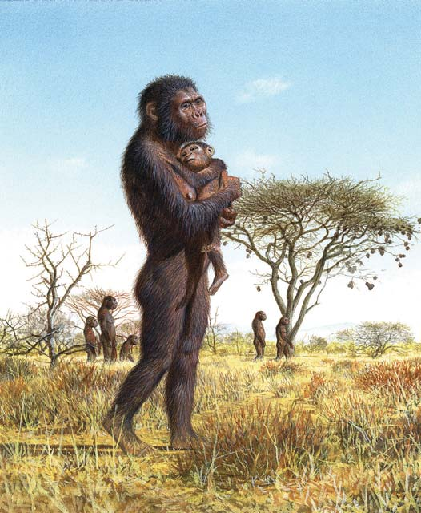
La evolución de los primates 475
años hasta hace 800,000 años. Los sitios donde se encontraron fósiles de H. antecessor muestran numerosos cortes sobre huesos humanos, lo que sugiere que estos humanos primitivos practicaban el canibalismo. Homo heidelbergensis , que apareció hace aproximadamente 600,000 años y existió hasta hace más o menos 300,000 años, quizá descendió del H. antecessor . Los fósiles de H. heidelbergensis se descubrieron por primera vez en Alemania hace aproximadamente 100 años. Este homínino extinto tenía un cerebro más grande, similar en tamaño al de los humanos modernos, que el H. ergaster o el H. antecessor . Algunos científi cos no reconocen al H. antecessor y sugieren que los fósiles de H. antecessor deben clasifi carse como H. heidelbergensis . La clasifi cación de H. heidelbergensis también es controvertida porque muchos científi cos (mas no todos) que estudian sus restos fósiles piensan que tanto neandertales como humanos modernos descienden de él.
Los neandertales aparecieron hace aproximadamente 250,000 años
Los fósiles de neandertales se descubrieron por primera vez en el valle Neander en Alemania. 1 Vivieron a lo largo de Europa y el oeste de Asia,
La creciente inteligencia asociada con un cerebro más grande permitió a estos humanos tempranos elaborar herramientas de piedra más elaboradas, conocidas como herramientas achelenses , incluidas hachas de mano y otros implementos que los científi cos han interpretado como cortadores, perforadores y raspadores ( FIGURA 22-12 ). Su inteligencia también les permitió a estos humanos sobrevivir en áreas frías. El Homo erectus obtuvo alimento al cazar o forrajear, y quizá vistió ropas, encendió fuego y vivió en cuevas o refugios. Se ha desenterrado evidencia de armas (lanzas) en sitios del H. erectus en Europa. (Para la notable historia de una ramifi cación evolutiva a partir del H. erectus , consulte Preguntas acerca de: Los humanos más pequeños ) .
Los humanos arcaicos datan de hace aproximadamente 1.2 millones de años a 200,000 años
Los humanos arcaicos son descendientes del H. ergaster de diversas regiones que vivieron en África, Asia y Europa desde hace aproximadamente 1.2 millones de años hasta 200,000 años. El cerebro de los humanos arcaicos era en esencia del mismo tamaño que el de los humanos modernos, aunque sus cráneos conservaban algunas características ancestrales. Las poblaciones de humanos arcaicos tenían culturas (tradiciones aprendidas) ricas y variadas que incluían la fabricación de muchos tipos de herramientas y objetos con signifi cado simbólico y ceremonial. Algunos investigadores clasifi can los fósiles humanos arcaicos más antiguos descubiertos en Europa (en España) como Homo antecessor . El Homo antecessor existió desde hace aproximadamente 1.2 millones de
1 Neandertal se escribía antes neanderthal . La h muda se eliminó del alemán moderno, mas no del nombre científi co.
Frente en retroceso
Rostro/mandíbulas que se proyectan
Arcos superciliares pronunciados
© William Attard McCarthy
FIGURA 22-11 Cráneo de Homo erectus proveniente de China Las partes reconstruidas son blancas. Observe la frente en retroceso, los arcos superciliares pronunciados y el rostro y las mandíbulas que se proyectan.
FIGURA 22-12 Herramienta achelense Esta herramienta de piedra es una herramienta achelense típica. Fue elaborada hace aproximadamente 800,000 años al golpear ambos lados formando dos facetas o caras (se muestra) para darle forma de lágrima. La herramienta se descubrió con otros fósiles y herramientas en Gran Dolina, Sierra de Atapuerca, España.
© Javier Trueba/Madrid Scientifi c Films/Photo Researchers, Inc.
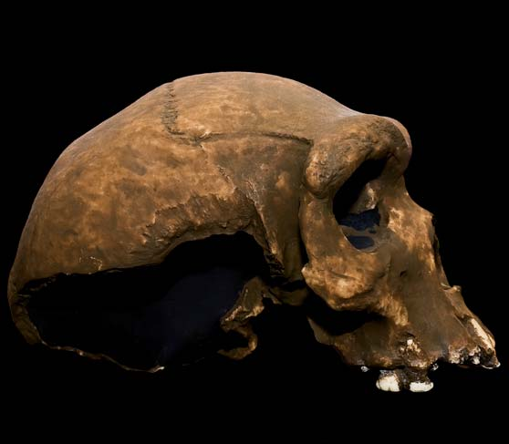
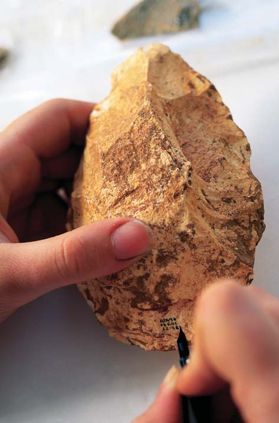
476 Capítulo 22
los otros humanos superaron competitivamente o exterminaron a los neandertales, lo que condujo a su extinción. También es posible que los neandertales se cruzaran con dichos humanos, lo que diluyó sus características e impidió su reconocimiento. Los análisis de ADN mitocondrial (ADNmt) aportan datos útiles para tales controversias. Cada una de los varios cientos de mitocondrias dentro de una célula tiene alrededor de 10 copias de un pequeño ADN en espiral que codifi ca para el ARN de transferencia, ARN ribosomal y ciertas enzimas respiratorias. El ADNmt se transmite sólo a través de la línea materna, porque los óvulos, no los espermatozoides, aportan mitocondrias. Dado que el ADNmt muta más rápidamente que el ADN nuclear, el ADNmt es un indicador sensible de evolución. los investigadores han extraído y evaluado el ADNmt de siete neandertales separados. Su secuencia difi ere signifi cativamente de todas las secuencias de ADNmt humano moderno, aunque es más similar al humano que al ADNmt de chimpancé. Este hallazgo sugiere que los neandertales son un callejón sin salida evolutivo y que no se cruzaron de manera considerable con humanos más modernos. No obstante, la cantidad de cruza que pudo ocurrir entre neandertales y humanos anatómicamente modernos sigue siendo controvertida.
Los científi cos casi llegan a un consenso acerca del origen del Homo sapiens moderno
El Homo sapiens con características anatómicamente modernas existió en África hace aproximadamente 195,000 años. Conforme estos huma-
desde hace aproximadamente 250,000 años hasta hace 28,000 años. Aunque en una época muchos científi cos consideraron a los neandertales como una subespecie de H. sapiens , la creciente evidencia sugiere que los neandertales fueron una especie separada de los humanos modernos, Homo neanderthalensis . Estos primeros humanos tenían constituciones fornidas y bajas. Sus rostros se proyectaban ligeramente, sus barbillas y frentes retrocedían, y tenían arcos superciliares pronunciados y mandíbulas pesadas; sus cerebros y dientes frontales eran más grandes que los de los humanos modernos y tenían grandes cavidades nasales y huesos malares en retroceso. Los científi cos sugieren que las narices grandes ofrecían mayor área superfi cial en los senos nasales neandertales, lo que les permitía calentar mejor el frío aire de la Eurasia de la edad de hielo conforme el aire inhalado viajaba desde la cabeza hacia los pulmones. Las herramientas neandertales, conocidas como herramientas musterienses , eran más elaboradas que las del H. erectus ( FIGURA 22-13 ). Estudios de sitios que habitaron los neandertales indican que cazaban animales grandes. La existencia de esqueletos de ancianos y de algunos con fracturas curadas puede demostrar que los neandertales se ocupaban de los viejos y los enfermos, indicio de avanzada cooperación social. Aparentemente tenían rituales, posiblemente de signifi cado religioso, y en ocasiones enterraban a sus muertos. La desaparición de los neandertales hace aproximadamente 28,000 años es un misterio que ha producido debate entre los paleoantropólogos. Otros grupos de H. sapiens con características más modernas coexistieron con los neandertales durante muchos miles de años. Quizá
En términos evolutivos, ¿qué son los “ hobbits ”? En 2004, paleoantropólogos reportaron un sorprendente descubrimiento: fósiles de siete humanos en una cueva en la isla de Flores en Indonesia. El descubrimiento fue completamente inesperado, porque los huesos y dientes fósiles eran de humanos adultos que medían aproximadamente 1 m de alto. Los pequeños humanos, que fueron apodados “ hobbits ” por los medios de difusión, podían representar una nueva especie, Homo fl oresiensis . Aunque estos homíninos tenían pequeños cerebros del tamaño de simios, con los fósiles se encontraron elaboradas herramientas de piedra, hogueras y huesos grabados, que indicaban que el H. fl oresiensis era capaz de generar pensamientos y actividades complejos. Los huesos grabados eran principalmente de elefantes pigmeos ( Stegodon ) y ratas gigantes de Flores ( Papagomys ), y brindaron claves acerca del alimento que cazaba el H. fl oresiensis (vea la fi gura). Con base en varios métodos de datación, se considera que el H. fl oresiensis existió desde hace aproximadamente 38,000 años hasta tan recientemente como 12,000 años, cuando se extinguió. Estudios detallados de la bóveda craneal del H. fl oresiensis , publicados en 2005, revelaron que era similar en muchos aspectos al cerebro más grande del H. erectus , que se sabe vivió en islas cercanas. Muchos investigadores
concluyeron a partir de ésta y otras evidencias que el H. fl oresiensis era una ramifi cación evolutiva del H. erectus . ¿Por qué el H. fl oresiensis era tan pequeño? Los biólogos con frecuencia observan dos tendencias evolutivas de los mamíferos que viven en islas remotas: los mamíferos grandes tienden a evolucionar en especies mucho más pequeñas, y los mamíferos pequeños tienden a evolucionar en especies mucho más grandes. No es irracional suponer que la pequeña población de ancestros de H. erectus que colonizaron Flores, acaso al navegar hacia la isla sobre un tronco, experimentaron enanismo evolutivo a lo largo de los miles de años que estuvieron aislados en Flores. (Si H. erectus hubiera sido un visitante frecuente de Flores, el fl ujo génico entre la población indígena y los visitantes habría evitado que la población indígena se volviera sensiblemente más pequeña). No todos están de acuerdo con la hipótesis de que el H. fl oresiensis es una especie separada de pequeños humanos. Algunos investigadores creen que los fósiles no se identifi caron de manera adecuada. En un estudio publicado en 2006, estos investigadores sugieren que los fósiles son de individuos de H. sapiens que sufrieron un raro defecto genético (microcefalia) que produce cerebros y cuerpos pequeños. El equipo de investigación que desenterró los fósiles regresó a la cueva y continuará con
las excavaciones. Se anticipa que descubrimientos futuros ayudarán a los científi cos a responder las muchas preguntas que se tienen acerca de los humanos más pequeños de la Tierra. Mientras tanto, continúa el debate acerca del origen del H. fl oresiensis .
Preguntas acerca de
LOS HUMANOS MÁS PEQUEÑOS
Peter Schouten/National Geographic Society/University of Wollongong
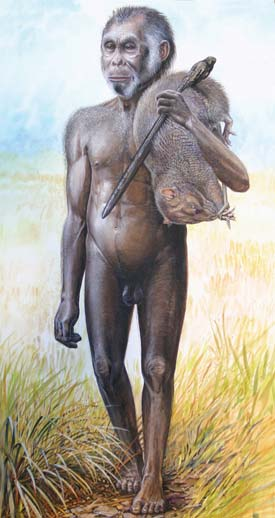
La evolución de los primates 477
como la principal explicación del origen de los humanos modernos que viven alrededor del mundo. Nuevos datos incluyen el descubrimiento de los restos fosilizados más antiguos del H. sapiens moderno en África y el análisis de ADN a partir de mitocondrias, autosomas y el cromosoma Y. En 2005, fósiles de los más antiguos H. sapiens modernos conocidos se dataron confi ablemente en 195,000 años de antigüedad; dichos fósiles se descubrieron en el sur de Etiopía. Ningún fósil de H. sapiens con edad similar se ha descubierto en Europa o Asia. Los fósiles más antiguos de H. sapiens anatómicamente moderno en Europa y la mayor parte de Asia datan de hace 45,000 a 40,000 años. Una excepción está en Israel, donde fósiles de H. sapiens se han datado en 100,000 años antes del presente. La antropología molecular , la comparación de moléculas biológicas de individuos actuales en poblaciones humanas regionales, brinda pistas que ayudan a los científi cos a revelar el origen de los humanos modernos y rastrear migraciones humanas. Una serie de estudios genéticos recientes de ADNmt, ADN autosómico y el cromosoma Y fortalece el caso de África como el lugar de nacimiento de los humanos modernos ( FIGURA 22-14 ). Dichos estudios proporcionan comparaciones detalladas de ADN en poblaciones contemporáneas alrededor del mundo, así como ADN antiguo extraído de restos de neandertal y H. sapiens primitivos.
Repaso
■ ¿Cómo difi eren los cráneos de simios y humanos?
■ ¿En qué difi ere el esqueleto de un simio del esqueleto humano?
■ ¿En qué difi eren los australopitecinos y el género Homo ?
■ ¿Cómo puede distinguir entre H. habilis y H. erectus ?
■ ¿En qué difi eren el H. neanderthalensis y el H. sapiens ?
FIGURA 22-13 Herramienta musteriense Las herramientas musterienses se llaman así por el sitio neandertal en Le Moustier, Francia. Las herramientas musterienses incluyen varias herramientas de piedra fabricadas habilidosamente; esta herramienta, con sus bordes afi lados, quizá se utilizó para raspar piel y/o para dar forma a la punta de una lanza. Aunque los neandertales tenían lanzas, no desarrollaron arcos y fl echas, y en consecuencia tenían que acercarse a su presa cuando cazaban.
© Mark Eaton/Dreamstime
M172, M304 M135 M96 YAP
M60
M2 M91
M168 M89
M9
M69
Origen
M130
M17
M173 LLY22
M343
M242
M45 M174
M122
M4
M20
M175 M130
M3
M170 M201
FIGURA 22-14 La ruta de las migraciones humanas, con base en datos del cromosoma Y El Homo sapiens se originó en el este de África y migró desde ahí a todo el mundo.
(Fuente: Stix, G. “Traces of a Distant Past”. Scientifi c American, p. 59, julio de 2008. Información de créditos del autor en mapas National Geographic .
nos anatómicamente modernos se dispersaron alrededor del mundo, desplazaron a otros homíninos, como el H. erectus y el H. neanderthalensis . Hace alrededor de 30,000 años, los humanos anatómicamente modernos eran los únicos miembros del género Homo que quedaban, sin incluir las pequeñas poblaciones aisladas. Tanto hallazgos fósiles recientes como extensos análisis moleculares han promovido el (reciente) modelo fuera de África ( out of Afr ica, también llamado Recent Afr ican Origin , RA O , u origen africano reciente)


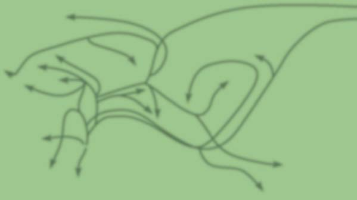
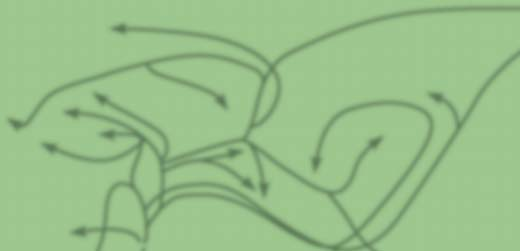
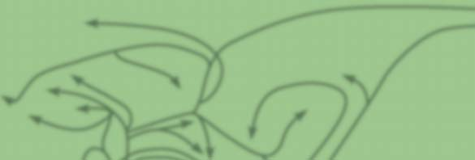


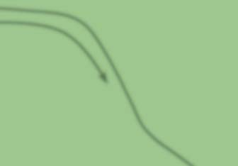


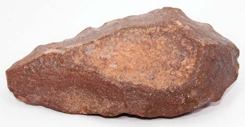
478 Capítulo 22
manadas migratorias de gacelas. Sin embargo, una vez que las personas cambiaron a la agricultura, rara vez recurrieron a la cacería y la recolección para obtener alimentos. Otros avances en la agricultura incluyen la domesticación de animales, que las personas mantienen para abastecerse de alimentos, leche y pieles. La evidencia arqueológica indica que quizá las cabras y ovejas silvestres fueron los primeros animales domesticados en el suroeste de Turquía, el norte de Irak e Irán. En el Viejo Mundo, las personas también usaron animales para preparar los campos para el cultivo. Otro gran avance en la agricultura fue la irrigación, que comenzó hace más de 5000 años en Egipto. La producción de alimentos agrícolas consumía más tiempo que la caza y la recolección, pero también era más productiva. En las sociedades cazadoras-recolectoras todos compartían la responsabilidad de obtener alimento. En las sociedades agrícolas se necesitan menos personas para proporcionar alimentos a todos. En consecuencia, la agricultura liberó a algunas personas para seguir otras empresas, incluidas religión, arte y diversas artesanías.
La cultura humana ha tenido un profundo impacto sobre la biosfera
La cultura humana ha tenido efectos de largo alcance tanto sobre la sociedad humana como sobre otros organismos. La Revolución Industrial, que comenzó en el siglo xviii, llevó a las poblaciones a concentrarse en las áreas urbanas cerca de los centros manufactureros. Los avances en la agricultura alentaron el desarrollo de la urbanización, porque cada vez se necesitaban menos personas en las áreas rurales para producir alimentos para todos. La dispersión de la industrialización aumentó la demanda de recursos naturales para abastecer las materias primas para la industria. La cultura humana permitió que la población humana, que llegó a 6800 millones en 2009, se expandiera de manera tan dramática que existen serias preguntas acerca de la capacidad de la Tierra para sostener a tantas personas indefi nidamente (vea el capítulo 53). De acuerdo con el reporte Estado de la inseguridad alimentaria 2008 de las Naciones Unidas, 923 millones de personas no tienen acceso a los alimentos necesarios para tener vidas sanas y productivas. Para complicar el problema aún más, la ONU proyecta que 2600 millones adicionales de personas se agregarán a la población mundial para el año 2050. La cultura humana ha provocado la perturbación y degradación del ambiente a gran escala. La selva pluvial y otros ambientes naturales se eliminan rápidamente. En muchos lugares ocurre contaminación del suelo, el agua y el aire. Desde la Segunda Guerra Mundial, la degradación del suelo causada por prácticas agrícolas defectuosas, el pastoreo excesivo y la deforestación ha ocurrido en un área equivalente a 17% del área con vegetación total de la Tierra. Muchas especies no pueden adaptarse a los rápidos cambios ambientales provocados por los humanos y en consecuencia se extinguen. La reducción en la diversidad biológica a causa de la extinción de especies es alarmante (vea el capítulo 57). En el lado positivo, las personas están conscientes del daño que causan y tienen la inteligencia para modifi car su comportamiento para mejorar dichas condiciones. La educación, incluyendo el estudio de la biología, puede ayudar a las futuras generaciones a desarrollar mayor sensibilidad ambiental.
Repaso
■ ¿Cómo afecta al planeta Tierra la cultura humana?
22.4 CAMBIO CULTURAL
OBJETIVO DE APRENDIZAJE
8 Describir el impacto de la cultura humana sobre la biosfera.
En términos genéticos, los humanos no son muy diferentes de otros primates. En el ámbito de las secuencias de ADN, los humanos son aproximadamente 98% idénticos a los gorilas y 99% idénticos a los chimpancés. Sin embargo, las relativamente pocas diferencias genéticas dan lugar a muchas importantes características distintivas, como mayor inteligencia y la habilidad para capitalizarla al transmitir el conocimiento de una generación a la siguiente. La cultura humana no se hereda en el sentido biológico, sino que se aprende, principalmente a través del lenguaje. 2 La cultura humana es dinámica y se modifi ca conforme las personas obtienen nuevo conocimiento. La cultura humana por lo general se divide en tres etapas: (1) el desarrollo de sociedades cazadoras-recolectoras, (2) el desarrollo de la agricultura y (3) la Revolución Industrial. Los primeros humanos eran cazadores y recolectores que dependían de lo que estaba disponible en su ambiente inmediato. Eran nómadas, y conforme los recursos en un área dada se agotaban o conforme la población aumentaba, migraban hacia un área diferente. Dichas sociedades requerían una división del trabajo y la capacidad para fabricar herramientas y armas, que eran necesarias para matar presas, raspar pieles, sacar raíces y tubérculos, y cocinar alimentos. Aunque los científi cos no están seguros de cuándo se incorporó la cacería a la sociedad humana, sí saben que declinó en importancia hace aproximadamente 15,000 años. Esto pudo deberse a la disminución de la abundancia de grandes mamíferos, motivada en parte por la caza excesiva. En el siglo xxi sobreviven algunos grupos aislados de sociedades cazadoras-recolectoras, como los inuit de la región polar norte y los mbuti de África.
El desarrollo de la agricultura resultó en una fuente de alimento más confi able
La evidencia de que los humanos comenzaron el cultivo de la tierra hace aproximadamente 10,000 años incluye la presencia de herramientas agrícolas y material vegetal en sitios arqueológicos. La agricultura resultó en una fuente de alimento más confi able y la evidencia arqueológica sugiere que surgió en varios pasos. Aunque existe variación de un sitio a otro, el cultivo de plantas, en combinación con la caza, por lo general ocurrió primero. La domesticación de animales usualmente ocurrió más tarde, pero en algunas áreas, como en Australia, los primeros humanos no domesticaron animales. La agricultura, a su vez, con frecuencia conduce a residencias permanentes, porque durante la agricultura se invierte tiempo considerable en un área. Con frecuencia, alrededor de las granjas crecieron villas y ciudades, pero la conexión entre la agricultura y el establecimiento de villas y pueblos se complica por ciertos descubrimientos. Por ejemplo, Abu Hureyra, en Siria, fue una villa fundada antes del surgimiento de la agricultura. Los aldeanos subsistieron de la rica vida vegetal del área y las
2 Los humanos no son los únicos animales que tienen cultura. Los chimpancés tienen culturas primitivas que incluyen técnicas para el uso de herramientas, métodos de caza y comportamientos sociales que varían de una población a otra. Estas tradiciones culturales se transmiten a la siguiente generación mediante enseñanza e imitación; vea las fi guras 1-18 y 52-13b.
La evolución de los primates 479
22.1 (página 466)
1 Describir las adaptaciones estructurales que tuvieron los primates para vivir en las copas de los árboles.
■ Los primates son mamíferos placentarios que surgieron de pequeños mamíferos arborícolas (habitantes de árboles) parecidos a musarañas. Los primates poseen cinco dedos para asir, incluido un pulgar o dedo gordo del pie oponible ; extremidades largas y delgadas que mueven libremente en las caderas y hombros; y ojos ubicados enfrente de la cabeza.
22.2 (página 467)
2 Mencionar los tres subórdenes de los primates y dar ejemplos representativos de cada uno.
■ Los primates se dividen en tres subórdenes. El suborden Prosimii incluye lémures, gálagos y lórises. El suborden Tarsiiformes incluye a los tarseros. El suborden Anthropoidea incluye a los antropoides: monos, simios y humanos.
Aprenda más acerca de la evolución de los primates al hacer clic sobre la fi gura en CengageNOW.
3 Distinguir entre antropoides, hominoides y homíninos.
■ Los antropoides incluyen monos, simios y humanos. Los primeros antropoides se ramifi caron en dos grupos: monos del Nuevo Mundo y monos del Viejo Mundo.
■ Los hominoides incluyen simios y humanos. Los hominoides surgieron del linaje de los monos del Viejo Mundo. Existen cuatro géneros modernos de simios: gibones, orangutanes, gorilas y chimpancés.
■ La línea homínina consiste de humanos y sus ancestros.
22.3 (página 471)
4 Describir las diferencias esqueléticas y craneales entre simios y homíninos.
■ A diferencia de los esqueletos de simios, los esqueletos de homíninos tienen adaptaciones que refl ejan la habilidad para pararse erguidos y caminar en dos pies. Estas adaptaciones incluyen una compleja curvatura de la columna vertebral, una pelvis más corta y más ancha, reposicionamiento del foramen magnum en la base del cráneo y un primer dedo del pie que está alineado con los otros dedos.
■ El cráneo humano carece de arcos superciliares pronunciados, es más plano en la frente que los cráneos de simios y tiene una barbilla pronunciada. El cerebro humano es más grande que el de los simios y las mandíbulas están estructuradas de modo que los dientes están ordenados en forma de U.
Aprenda más acerca de los esqueletos de monos, gorilas y humanos al hacer clic sobre la fi gura en CengageNOW.
5 Describir brevemente a los siguientes homíninos tempranos: Orrorin , Ardipithecus y Australopithecus anamensis , A. afarensis y A. africanus .
■ El Orrorin es un homínino primitivo que surgió hace aproximadamente 6 millones de años. Los investigadores que han estudiado los fósiles de los huesos de la pierna del Orrorin consideran que caminaba erguido y era bípedo (caminaba en dos pies).
■ A las especies Ardipithecus , Australopithecus y Paranthropus con frecuencia se les denomina australopitecinos . Los australopitecinos eran bípedos,
una característica homínina. La primera especie Ardipithecus , el A. kadabba , apareció hace aproximadamente 5.8 millones de años. El Ardipithecus ramidus , que apareció hace más o menos 4.8 millones de años, pudo dar origen al Australopithecus anamensis , que a su vez pudo dar origen a otro homínino primitivo, el Australopithecus afarensis . Muchos paleoantropólogos consideran que el A. afarensis dio origen a varias especies de australopitecinos, incluido el Australopithecus africanus , el Paranthropus spp. y posiblemente al Homo habilis . 6 Distinguir entre los siguientes miembros del género Homo : H. habilis , H. ergaster , H. erectus , H. antecessor , H. heidelbergensis , H. neanderthalensis y H. sapiens .
■ El Homo habilis fue el homínino más antiguo conocido con algunas de las características humanas de las que carecían los australopitecinos, incluido un cerebro ligeramente más grande. El Homo habilis fabricaba herramientas burdas con piedras.
■ Los fósiles mejor conocidos de H. ergaster , que existió hace 2.0 a 1.4 millones de años, provienen de Kenia. El Homo ergaster pudo ser el ancestro directo de los humanos posteriores.
■ El Homo erectus tenía un cerebro más grande que el H. habilis , fabricaba herramientas de piedra más elaboradas, y quizá usaba ropa, encendía fuegos y vivía en cuevas o refugios. El Homo erectus , que probablemente es una ramifi cación asiática tardía del H. ergaster , parece ser un callejón sin salida evolutivo.
■ Los humanos arcaicos son descendientes con diversidad regional del H. ergaster , que vivió en África, Asia y Europa, desde hace más o menos 1.2 millones de años hasta hace 200,000 años. Los cerebros de los humanos arcaicos en esencia eran del mismo tamaño que los cerebros de los humanos actuales, aunque sus cráneos conservaban algunos caracteres ancestrales, y tenían culturas ricas y variadas.
■ Algunos investigadores clasifi can los fósiles más antiguos de humanos arcaicos descubiertos en Europa (en España) como Homo antecessor . El Homo antecessor existió desde hace alrededor de 1.2 millones de años hasta hace 800,000 años.
■ Homo heidelbergensis , que apareció hace aproximadamente 600,000 años y existió hasta hace más o menos 300,000 años, pudo descender del H. antecessor . Esta homínino extinto tuvo un cerebro más grande, similar en tamaño al de los humanos modernos, que el H. ergaster o el H. antecessor . Muchos científi cos que estudian al H. heidelbergensis , piensan que tanto neandertales como humanos modernos descienden de él.
■ Los neandertales vivieron desde hace aproximadamente 250,000 hasta hace 30,000 años. Los neandertales tenían complexiones cortas y robustas; barbillas y frentes en retroceso; arcos superciliares pronunciados y mandíbulas pesadas; dientes frontales más grandes; y cavidades nasales con inusuales proyecciones óseas triangulares. Muchos científi cos consideran que los neandertales eran una especie separada, Homo neanderthalensis .
■ Los Homo sapiens , humanos anatómicamente modernos, existieron en África hace alrededor de 195,000 años. Hace más o menos 30,000 años, los humanos anatómicamente modernos eran los únicos miembros restantes del género Homo , sin incluir pequeñas poblaciones aisladas.
Aprenda más acerca de los cráneos de Homo al hacer clic sobre la fi gura en CengageNOW.
7 Discutir el origen de los humanos modernos.
■ Recientes hallazgos fósiles y extensos análisis moleculares promueven el (reciente) modelo fuera de África como la principal explicación del origen de los humanos modernos que viven alrededor del mundo. Nuevos datos incluyen el descubrimiento de los restos fosilizados más antiguos del moderno H. sapiens en África, así como análisis de ADN mitocondrial, del cromosoma Y y de autosomas.
22.4 (página 478)
8 Describir el impacto de la cultura humana sobre la biosfera.
■ El gran tamaño de cerebro de los humanos hace posible la transmisión del conocimiento de una generación a la siguiente. Dos avances signifi cativos en la cultura humana fueron el desarrollo de la agricultura y la Revolución Industrial.
■ ■ RESUMEN: ENFOQUE EN LOS OBJETIVOS DE APRENDIZAJE
480 Capítulo 22
Los primeros primates evolucionaron de (a) monotremas parecidos a musarañas (b) terápsidos (c) mamíferos placentarios parecidos a musarañas (d) tarseros (e) marsupiales parecidos a musarañas
Los antropoides están más cercanamente emparentados con ___________ que con ____________. (a) tarseros; lémures (b) lémures; monos (c) habitantes de árboles; tarseros (d) lémures; tarseros (e) habitantes de árboles; monos
¿Con qué grupo los hominoides comparten al ancestro común más reciente? (a) monos del Viejo Mundo (b) monos del Nuevo Mundo (c) tarseros (d) lémures (e) lórises y gálagos
__________________ en los humanos está centrado en la base del cráneo y coloca la cabeza para el andar erguido. (a) arcos superciliares (b) foramen magnum (c) pelvis (d) cresta craneal ósea (e) fémur
Los científi cos llaman colectivamente a los humanos y sus ancestros inmediatos (a) mamíferos (b) primates (c) antropoides (d) hominoides (e) homíninos
El homínino más antiguo que los científi cos colocaron en el género Homo es el (a) H. habilis (b) H. ergaster (c) H. erectus (d) H. heidelbergensis (e) H. neanderthalensis
Algunos científi cos consideran ahora que los fósiles identifi cados como Homo erectus representan a ¿cuáles dos especies diferentes? (a) H. habilis y H. erectus (b) H. ergaster y H. erectus (c) H. heidelber-
gensis y H. ergaster (d) H. neanderthalensis y H. erectus (e) H. neanderthalensis y H. sapiens
Los humanos arcaicos aparecieron tan temprano como hace ________ años. (a) 5 millones (b) 1.2 millones (c) 250,000 (d) 1000,000 (e) 5000
Los _______________ fueron un grupo primitivo de humanos con complexiones cortas y robustas, y arcos superciliares pronunciados que vivieron a lo largo de Europa y el oeste de Asia desde hace aproximadamente 250,000 hasta hace 30,000 años. (a) australopitecinos (b) driopitecinos (c) humanos arcaicos (d) neandertales e) cro-magnones
El cráneo de los humanos modernos carece de (a) caninos pequeños (b) un foramen magnum centrado en la base del cráneo (c) arcos superciliares pronunciados (d) ordenamiento de los dientes con forma de U en la mandíbula (e) una bóveda craneal grande
La comparación de material genético de individuos de poblaciones regionales de humanos, que se utiliza para ayudar a revelar el origen y migración de los humanos modernos, se conoce como (a) paleoarqueología (b) antropología cultural (c) antropología molecular (d) citogenética (e) dimorfi smo genético
Coloque los siguientes homíninos en orden cronológico de aparición en el registro fósil, a partir del más temprano: 1. H. ergaster 2. H. sapiens 3. H. neanderthalensis 4. H. erectus (a) 1, 4, 2, 3 (b) 4, 1, 2, 3 (c) 4, 1, 3, 2 (d) 3, 1, 4, 2 (e) 1, 4, 3, 2
EVALÚE SU COMPRENSIÓN
Si el lector evaluara si otros humanos primitivos exterminaron a los neandertales, ¿qué tipo de evidencia arqueológica debería buscar?
Restos de H. sapiens se han encontrado en el sur de Europa junto con huesos de ciervos, pero en la actualidad el ciervo sólo existe en el norte de Europa y Asia. Explique la aparente discrepancia.
VÍNCULO CON LA EVOLUCIÓN. ¿Cuál fue el ancestro común de chimpancés y humanos: un chimpancé, un humano o ninguno? Explique su respuesta.
VÍNCULO CON LA EVOLUCIÓN. Algunos científi cos dicen que la medicina moderna y las mejores medidas de sanidad hacen más lento o alteran el curso de la evolución humana en los países altamente desarrollados de la actualidad. Como resultado, la evolución en los humanos de hoy ha pasado de la supervivencia del más apto a la supervivencia de casi todos. ¿Considera que ésta es una idea válida? ¿Por qué sí o por qué no?
ANÁLISIS DE DATOS. Si el lector agregara el H. fl oresiensis a la fi gura 22-9, ¿dónde lo colocaría? Justifi que su respuesta.
ANÁLISIS DE DATOS. Con la información de la fi gura 22-9, dibuje un cladograma simple que represente una hipótesis razonable de la evolución humana en el nivel género. ( Sugerencia: el diagrama tendrá tres ramas).
ANÁLISIS DE DATOS. Los cuatro cromosomas que se muestran abajo son cromosomas Y de hombres en diferentes partes del mundo. Las bandas moradas representan genes específi cos que son idénticos en los cuatro hombres. Las bandas rojas representan mutaciones genéticas (M) que aparecieron en diferentes momentos; M168 apareció hace aproximadamente 50,000 años, M9 hace alrededor de 40,000 años y M3 hace más o menos 10,000 años. Con base en lo que aprendió en este capítulo, identifi que la fuente geográfi ca de los hombres que portan cada uno de estos cromosomas: africana, europea, amerindia y los primeros migrantes fuera de África. (Consulte la fi gura 22-14).
M168 M168 M9 M9 M3
M168
Preguntas adicionales están disponibles en CengageNOW en www.cengage.com/login.
PENSAMIENTO CRÍTICO